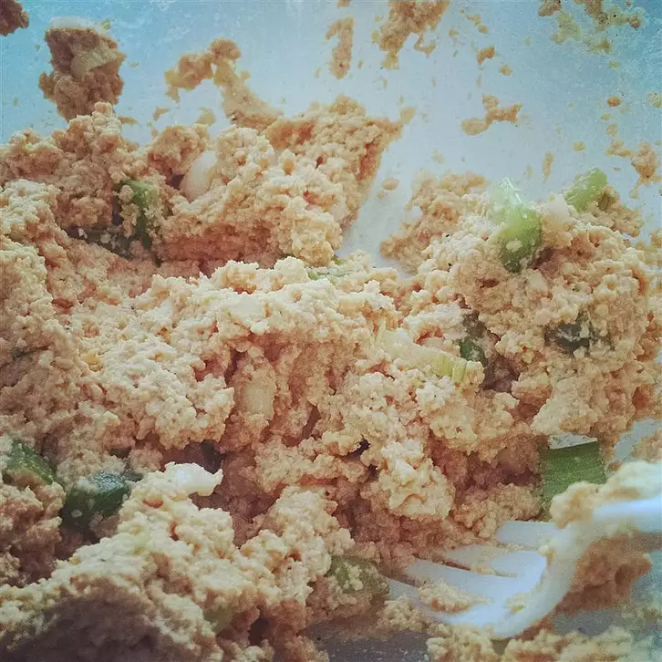

Tofu Sandwich Spread

Description
This recipe will instruct you on how to make your own tofu sandwich spread!
Ingredients
- 1 pound firm tofu
- 1 stalk celery, chopped
- 1 green onion, chopped
- ½ cup mayonnaise
- 2 tablespoons soy sauce
- 1 tablespoon lemon juice
Steps
- Drain the block of tofu, and freeze overnight. Thaw, and cut into quarters. Squeeze out any moisture by hand, then wrap in paper towels, and squeeze again. Crumble into a medium bowl.
- Add celery and green onion to the tofu. Stir in mayonnaise, soy sauce and lemon juice until well blended.